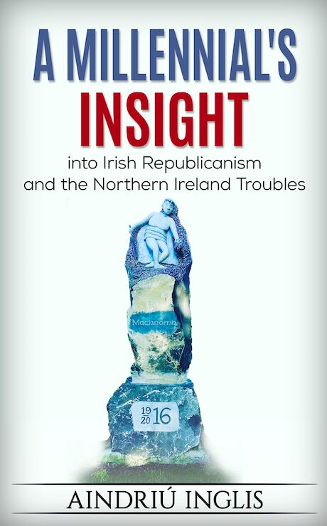

Education
The Story Thus Far...
Here are my most recent results in the Software Development Apprenticeship Programme.
So far, we have been assessed on pseudocode, object orientated programming, the principles of ICT systems and data security
and web fundamentals. The grading system encompasses either a pass, merit or distinction. The course itself revolves hugely
around continuous assessment and examinations. Be sure to check back regularly for more exam results!
Software Development Apprenticeship
| Course Code |
Course Module |
Grade |
Before my escapades into the world of technology, I had a previous life of study and education. After completing my Leaving Cert
in 2011, I entered University College Dublin at 17 where I studied history, politics and international relations for the
next 3 years. I had a particular interest in revolutionary and paramilitary groups, both left and right on the political axis. I
also enjoyed studying the history of the USSR and the Eastern bloc along with the history and politics of the Middle East and
North Africa Region. In 2014, I graduated with a BA joint major in History Politics and International Relations.
Masters
| Course Code |
Course Module |
Grade |
Grade Point Average |
Undergrad Year 3
| Course Code |
Course Module |
Grade |
Grade Point Average |
Undergrad Year 2
| Course Code |
Course Module |
Grade |
Grade Point Average |
Undergrad Year 1
| Course Code |
Course Module |
Grade |
Grade Point Average |
Book Publication

After I graduated in 2014, I decided I would like to continue my studies and complete a masters. In the same year, I began an MA in
Nationalism and Ethnic Conflict in University College Dublin. This course enabled me to study revolutionary groups, paramilitary organisations
and conflict regions in more detail. As part of my course work, I had to write a 15,000 word dissertation. My piece focused
primarily on the IRA and the Troubles in Northern Ireland. As you can see from my results table, I received an A- for my
efforts. After a short period of time, my dissertation was picked up by Book Hub Publishing based
in Co. Galway. The picture above is the cover for my eBook
which is available to buy on Amazon.